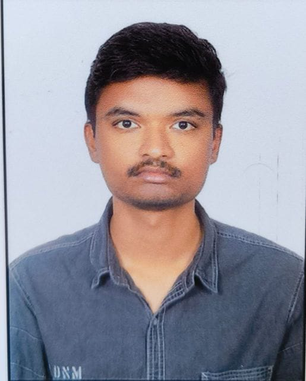

M.Tech CSE Student at IIIT Hyderabad | Systems & C++ Developer
📍 Hyderabad, India
Hi! I'm Sanjay.I am currently pursuing my M.Tech in Computer Science at IIIT Hyderabad.I love building systems-level projects in C++,understanding operating systems,and solving algorithms problems.Beyond coding,I enjoy competitive chess and leading community events.
M.Tech in Computer Science Engineering[cite: 2]
B.Tech in Metallurgical and Materials Engineering (CGPA: 6.61/10)
Intermediate MPC (Marks: 964/1000)
Languages: C++, C, Python, SQL